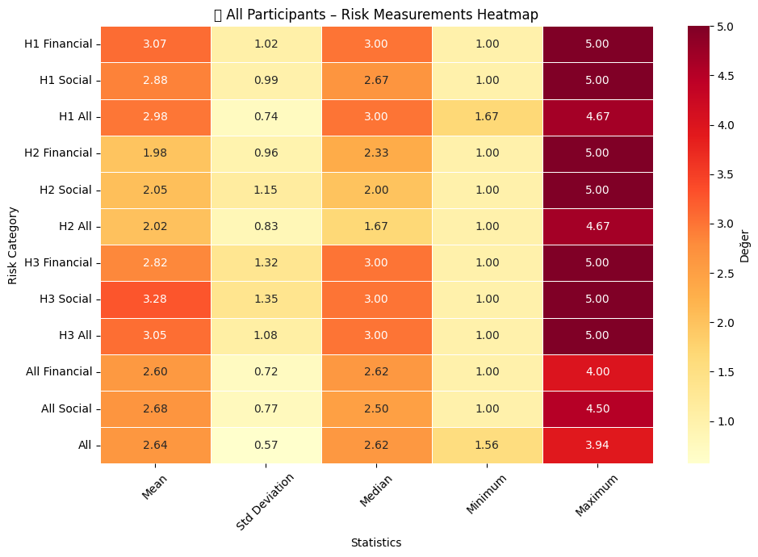
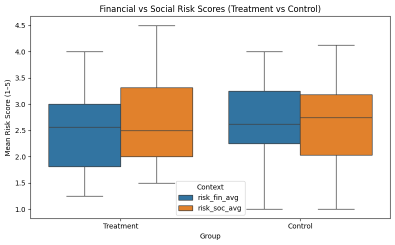
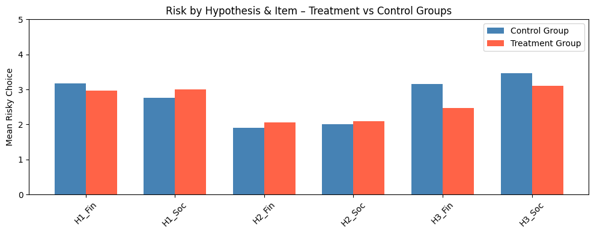
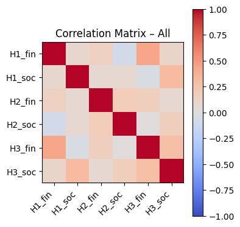
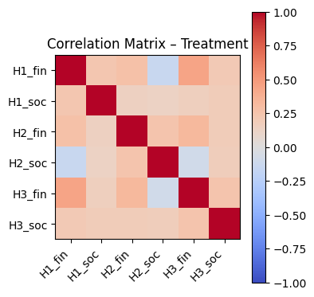
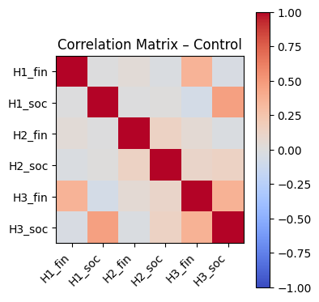

The Impact of External Information and Social Framing on Risky Choices
EC438 Group Project – Experimental Economics
Boğaziçi University, May 2025
Introduction
This study explores whether external cues (such as peer information or social responsibility) lead to a divergence between individuals’ financial and social risk-taking. Three main hypotheses were tested:
- H1 – Social Comparison: observing others’ choices increases risk appetite.
- H2 – Ambiguity Aversion: unclear probabilities reduce risk-taking.
- H3 – Prosocial Risk Aversion: deciding for others increases caution.
Theoretical Framework
- Social Comparison Theory (Festinger, 1954) → individuals align with peers’ choices under uncertainty.
- Ambiguity Aversion (Ellsberg paradox) → preference for known over unknown risks.
- Prosocial Risk Aversion → more conservative when responsible for others (Kahneman & Tversky, 1979).
Experimental Design
An online survey experiment was conducted (control vs. treatment versions). Participants answered binary choice questions under risk and uncertainty. The treatment group received additional information cues (peer decisions, hidden probabilities, or delegated responsibility).
Results
Heatmaps of Risk Scores
Boxplot & Histogram of Risk Distributions

Barplot of Risk by Hypothesis (H1–H3)
Correlation Matrices (All / Treatment / Control)
  Regression Scatterplot of Financial vs Social Risk

Key Findings
- H1 & H2: No significant differences → social comparison and ambiguity did not meaningfully alter risk behavior.
- H3: Significant result → when deciding for others, participants took fewer financial risks (p < 0.05).
- Overall: external info reduced financial risk-taking more than social, but effects were small and often insignificant.
Conclusion
Results suggest that social responsibility strongly increases caution in financial risk-taking, while peer effects and ambiguity had limited impact. Correlations show financial and social risk behaviors are weakly aligned, with external information narrowing differences. However, limited sample size and low statistical power restrict generalizability; larger experiments are needed.
References
Festinger (1954); Ellsberg (1961); Kahneman & Tversky (1979); Gilboa & Schmeidler (1989); Bursztyn et al. (2014); Polman & Wu (2020).